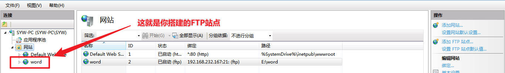

SEC-工具学习-0001-X-Scan,SwitchSniffer
今日接触的工具：
X-Scan,SwitchSniffer
SwitchSniffer
环境说明：搭建的环境为Windows 7 ，且环境可能欠缺.dll文件。
个人能力有限，找不到对应到win10甚至更高版本的SwitchSniffer。
点我下载SwitchSniffer
这个工具的功能目前能达到的是实现arp欺骗，其他暂且等待后续学习。
先搭建一台Windows7专业版的虚拟机，默认使用dhcp分配IP地址，然后尝试建立tcp连接，将SwitchSniffer传上去。
搭建ftp
搭建Windows7专业版虚拟机我就不赘述了，这里讲下ftp。
为什么要搭建ftp？因为Windows7无法安装vmtools，无法直接将文件拖拽入虚拟机。
进入并且安装功能
打开控制面板，打开 "程序" ,打开 "程序和功能" 下的”打开或关闭Windows功能”。
按下图的功能勾选上(有iis,tcp,http)，安装tcp功能。
安装完成后，打开控制面板，打开 "系统与安全" 的 "管理工具"
开始搭建FTP
右键新建FTP站点，后按下图操作即可。自己的虚拟机不需要身份认证，传个文件而已。

测试
放文件上去，在本机上测试一下。
现在就可以把软件传上去了。
安装工具
过程简单，一路next就行。
下面讲下会遇到的一个问题：
使用
使用时，如果正常应该不会报错。
但我是报下面的错误，看样子应该是软件编码时有问题，这个暂时没法解决。
总结下，这个软件操作流程比较简单，功能也比较简单，就是对环境有点”苛刻”……
X-Scan
开源的漏洞扫描器点我下载
提个醒：这扫描器某些安全软件会报毒，最好塞虚拟机里用。
这个就很方便了，win10也支持,结果输出到浏览器显示。
(⁼̴̀д⁼̴ )这算是操作最简单的那个了吧……
本博客所有文章除特别声明外，均采用 CC BY-NC-SA 4.0 许可协议。转载请注明来自 矢幽武博客！
 wechat
wechat alipay
alipay
相关推荐


评论
公告
威 武 不 屈 ,成 为 自 己 不败的 信条, 剑 走 偏 锋 ,缥 缈 孤 鸿 影 --孤志

微信号：无
QQ：无
--------------------------------每日更新指南：
刷题/记录总知识一般会沿用上次的文档
学习新知将新开文档